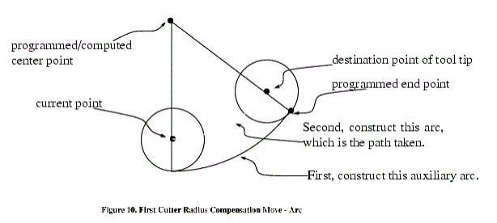

|
The algorithm used for the first move when the first move is a straight
line is to draw a straight line from the destination point which is
tangent to a circle whose center is at the current point and whose
radius is the radius of the tool. The destination point of the tool
tip is then found as the center of a circle of the same radius tangent
to the tangent line at the destination point. This is shown in Figure
9. If the programmed point is inside the initial cross section of
the tool (the circle on the left), an error is signalled.
|


|
If the first move after cutter radius compensation has been turned on is an arc, the arc which is generated is derived from an auxiliary arc which has its center at the programmed center point, passes through the programmed end point, and is tangent to the cutter at its current location. If the auxiliary arc cannot be constructed, an error is signalled. The generated arc moves the tool so that it stays tangent to the auxiliary arc throughout the move. This is shown in Figure 10.
Regardless of whether the first move is a straight line or an arc, the Z axis may also move at the same time. It will move linearly, as it does when cutter radius compensation is not being used.Rotary axis motions (A, B, and C axes) are allowed with cutter radius compensation, but using them would be very unusual.
After the entry moves of cutter radius compensation, the interpreter keeps the tool tangent to the programmed path on the appropriate side. If a convex corner is on the path, an arc is inserted to go around the corner. The radius of the arc is half the diameter given in the tool table.
When cutter radius compensation is turned off, no special exit move takes place. The next move is what it would have been if cutter radius compensation had never been turned on and the previous move had placed the tool at its current position.